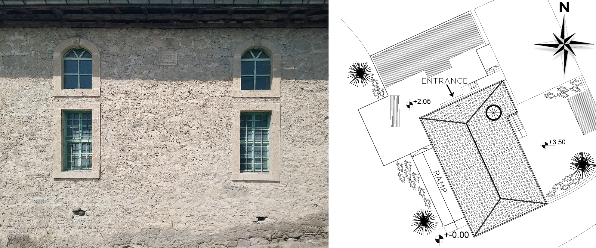
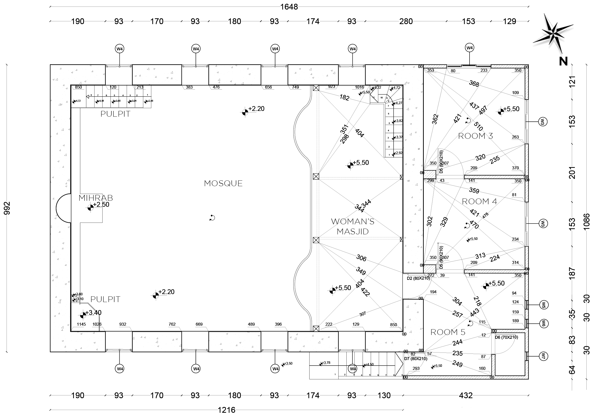
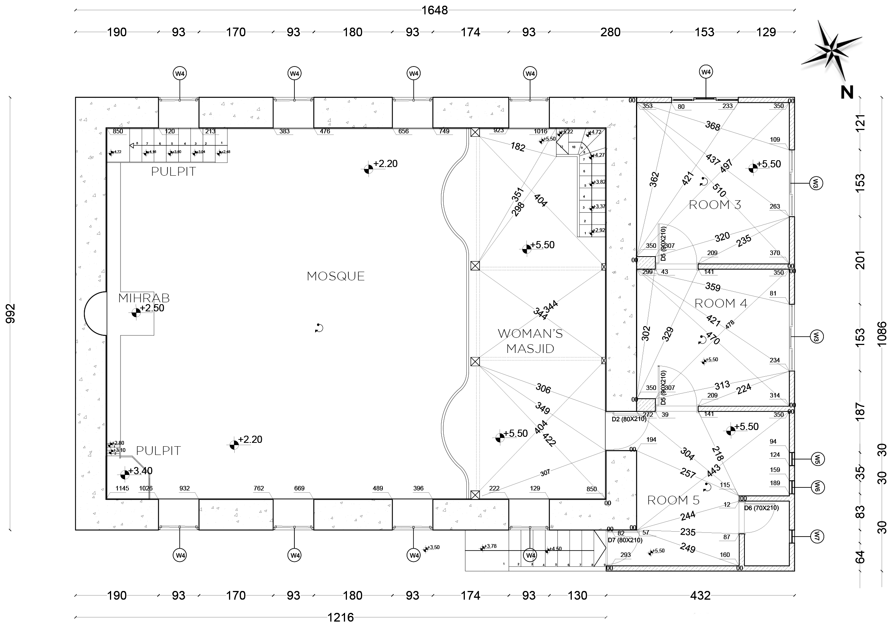
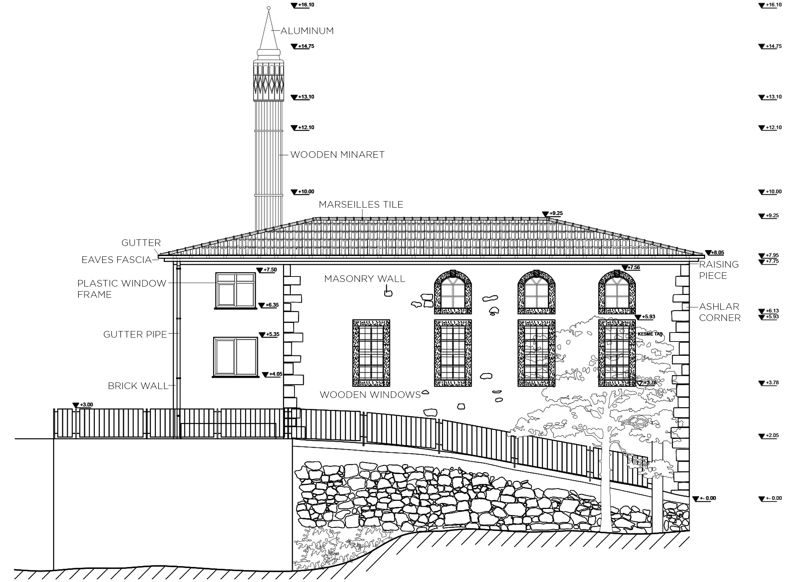
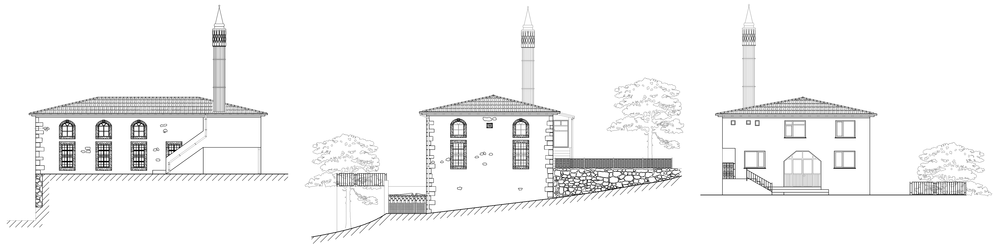
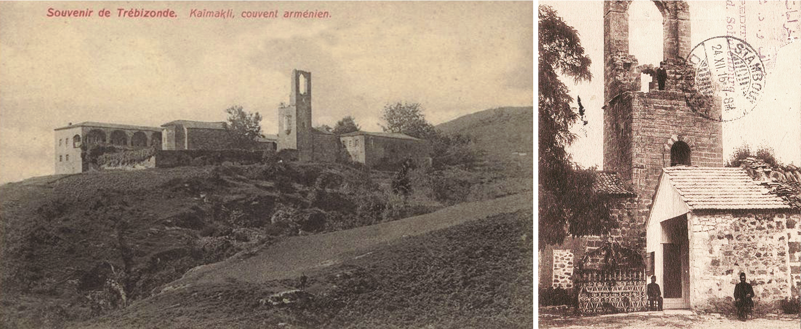

19th Century Mosque, Safranbolu/TR
Survey, B.Arch.
The project was assigned as a part of Bacholar degree coursework. The year of construction was verified as 1805, by the information from the engravings on the mosque. Its walls were built with rubble stone by applying masonry system. The stones were plastered with traditional methods.

Ground Floor
First Floor
Hewn stone were used for the corners of the building and window frames. Restoration work has been carried out so that no wear/corrosion in the carrier system or building materials have been observed.The building has 2 floors in total, both floors reserved for praying.
Elevations

15th Century Armenien Monastery, Trabzon/TR
Restoration & Restitution, B.Arch.
The project was assigned as a part of Bacholar degree coursework for the Kaymakli Monastery with the year of construction known as 1424. Before the beginning of the restoration work for the Monastery settlement area, the structures that were missing were rebuild as a part of the restitution process.


The design is centered around the strong geometric form of the monastery structures. Damaged sections have been restored using a modern shell, creating a contrast between the new and old elements while respecting the original shapes. This interplay highlights the historical structures, which peek through the contemporary shell, creating an intriguing effect.
The monastery, now repurposed as a studio and film shooting area, includes a church that has been reconstructed to match its original appearance. The main goal was to preserve the historical atmosphere for filming purposes.